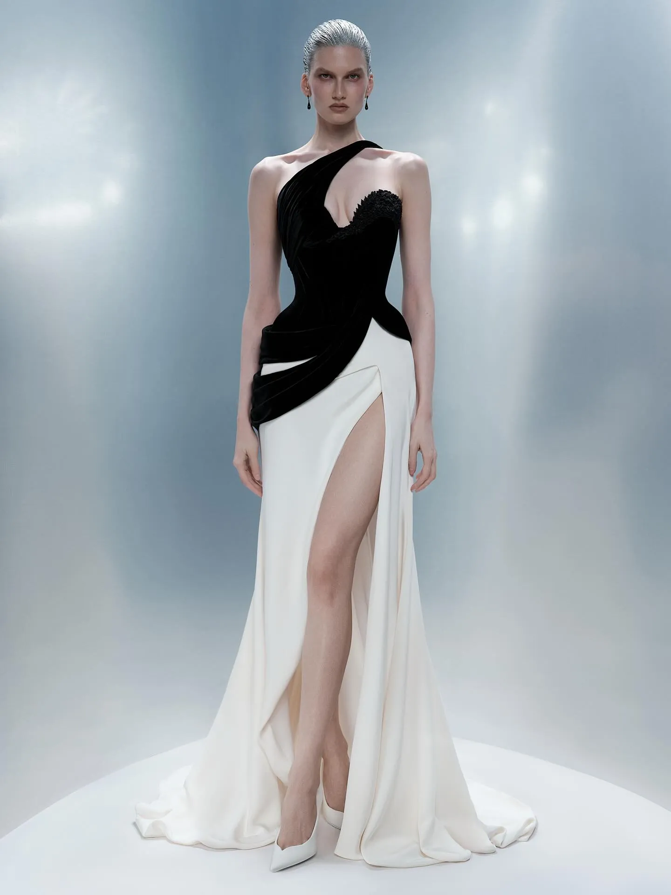
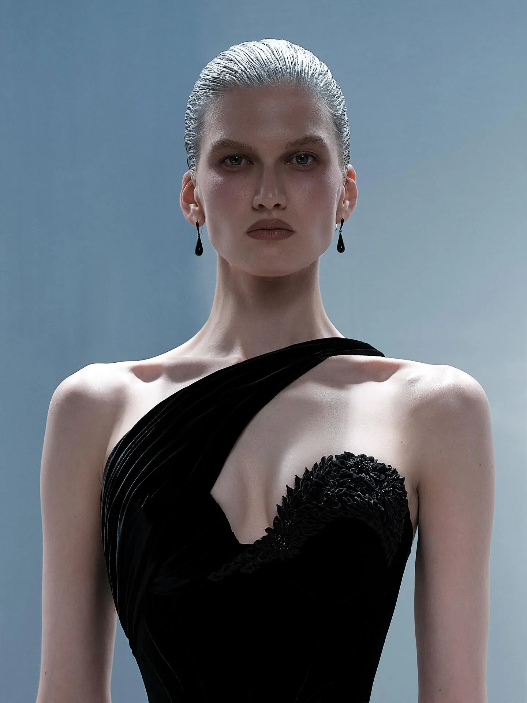
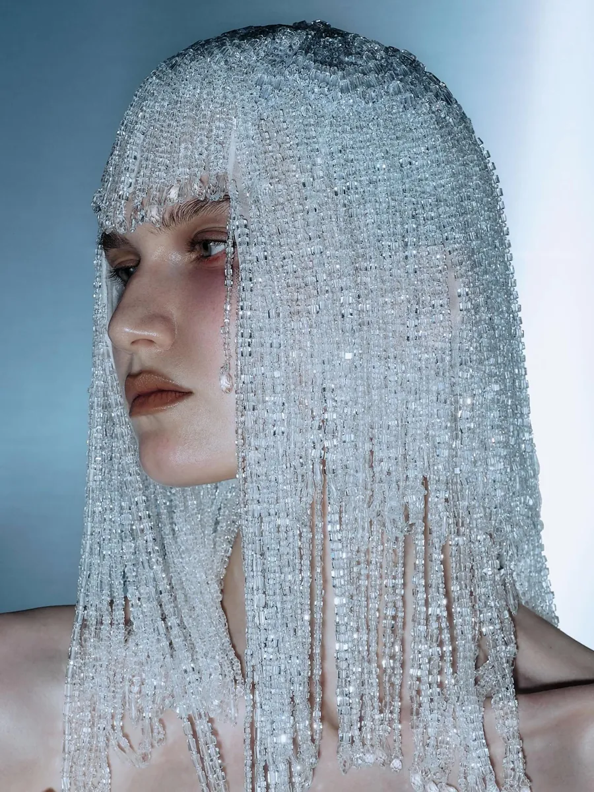

B E L I KPost couture Маши Белик · только по меркам
- С галёркиБелое платье, чёрный корсет. Красиво — и ничего не видно.
- Из партераДрапированный бархатный корсет и шёлковая юбка.
- ВблизиРучная вышивка. «Кутюр — почти ювелирная работа».
«Вещи Belik нужно разглядывать вблизи, а не с галёрки»
Записаться на примеркуBELIK Couture 2026
Каждая вещь шьётся по меркам одной клиентки. Ниже — карточки выходов коллекции. Нажмите «Хочу так», и модель попадёт в вашу карточку примерки.
Фото — Абдулла Артуев. Сумки — коллаборация с chooo.space Владимира Чувашева.
Маша Белик
- ШтиглицПетербургская академия имени Штиглица, дизайн одежды. Выгоняли дважды — «за неумение шить».
- ПарижДва года дизайнером в Steffie Christiaens.
- Ulyana SergeenkoПять лет старшим дизайнером.
- 2018Свой бренд без стартового капитала: подробные эскизы, предоплата первых клиенток — на эти деньги первые платья. Так BELIK работает до сих пор.
- ПосткутюрЕё собственный термин для того, что она делает.
Без маркетинга и без охоты за звёздами: звёзды приходят с заказами сами.
Юлия Снигирь · Лена Перминова · Дарья Мороз · Ксения Шипилова · Аня Чиповская

Кино, а не театр
От театральных костюмов Маша отказывается: «На экране платья смотрятся выигрышнее».
- «Жертвоприношение»
- Платья для фильма Ромена Гавраса — сатиры на богатых и знаменитых. Среди продюсеров — Gucci, премьера на фестивале в Торонто, сентябрь 2025.
- «Анна К»
- Десять платьев для сериала, 2021.
- Tears of Suyumbike
- Кутюрная коллекция в честь татарской царицы Сююмбике, самая сложная в исполнении; показана в сезонном парижском шоуруме.